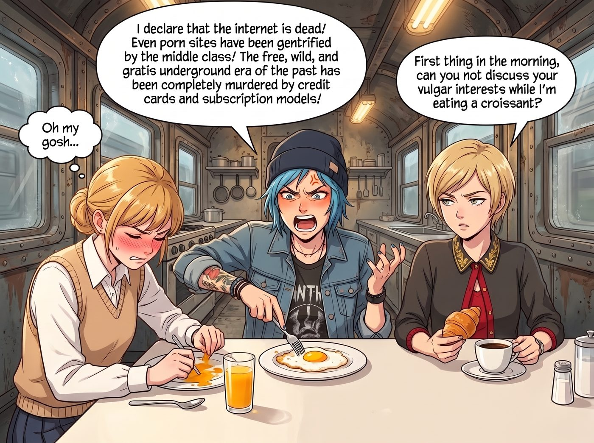

被中產階級化的網際網路

這一年過得太滿了。
搬家、封城、熬過一整個冬天的軍糧和停電、公路旅行、跟熊打架、還有那一長串亂七八糟的業配。Chloe 每天不是在工坊裡焊東西，就是被 Max 拖去哪裡拍照，再不然就是累到沾枕頭就睡著。說實話，她已經很久沒有閒下來，好好地「上網」過了。
直到最近，日子終於安穩了下來。
一、大屠殺
這天深夜，二號車廂裡沒有震耳欲聾的嬌喘聲，取而代之的，是 Chloe 滑鼠滾輪快要搓出火星子的暴躁狂點，以及她越來越沉重的嘆氣聲。
「死了。這個該死的網際網路徹底死了。」
Chloe 雙手抱頭，痛苦地盯著筆電螢幕，彷彿在看著某種逝去的偉大文明。
正靠在床頭看書的 Max 放下書本，挑了挑眉：「怎麼了？妳的『俄羅斯駭客』又給妳推播什麼可怕的彈跳視窗了嗎？」
「比那糟透了，超級麥克斯！這是一場針對草根藝術和地下精神的大屠殺！」
Chloe 憤怒地將筆電螢幕轉向 Max。螢幕上是某個黑底橘字的網站，但跟她記憶裡那種野生、粗糙、帶著點地下氣息的版面完全不同，現在的頁面乾淨得令人髮指。
「妳看這個！我記得以前這裡什麼都有，全是那種手持搖晃、沒打光、沒劇本的東西。結果現在呢？」Chloe 痛心疾首地指著那些有著精美封面的影片，「全都是帶著官方認證勾勾的職業模特兒！點進去還要叫我去訂閱她們每個月十九塊九的付費頻道！我才一年沒來，這裡就被資本主義徹底佔領了！」
二、攝影師
Max 看著她那副痛不欲生的樣子，笑得肩膀直抖。
「別笑了，Max……」Chloe 倒在床上，用枕頭捂住臉，「這是一個嚴肅的社會學悲劇。」
「我懂，我懂。這確實是獨立藝術的巨大損失。」
Max 一邊笑著附和，一邊從床頭櫃上拿起寶麗來相機。她湊到 Chloe 身邊，單手撐著下巴，用一種極其撩人的語氣在她耳邊輕聲說：
「不過，既然妳這麼懷念那種粗糙、真實、沒有劇本的『野生手持感』……也許我們不用依賴那些資本家的網站？畢竟，我們這裡就有現成的攝影師。」
她晃了晃手裡的相機。
Chloe 捂在臉上的枕頭慢慢滑落。
但這一次，她沒有像上回那樣當場當機。她看著 Max，臉是紅的，可是眼神卻很認真。
「……不行。」
Max 愣了一下：「為什麼？」
Chloe 撓了撓頭，彆扭地別過臉，聲音低了下來：
「網上那些人，老娘看了就看了，沒什麼感覺，也沒有任何負擔。她們是誰、拍完去哪，我一點都不在乎。」
她頓了頓。
「但妳不一樣。妳不是什麼內容，Max。妳是我的人。我才不要把妳變成一張什麼……素材。」
車廂裡安靜了幾秒。
這次換 Max 臉紅了。她看著眼前這個前一秒還在為了色情網站哀嚎、下一秒卻一本正經說出這種話的龐克女孩，心裡某個地方輕輕軟了一下。
「……妳這個笨蛋。」Max 小聲說，把相機放回床頭櫃，然後鑽進 Chloe 懷裡，「我只是開玩笑的。」
「我知道。」Chloe 把她摟緊，嘟囔著，「但老娘是認真的。」
三、產業升級
第二天早上，餐桌上。
Chloe 一邊用力戳著盤子裡的煎蛋，一邊對著全車廂發表她的悲憤演說：
「我宣布，網際網路已死！連色情網站都被中產階級化了！以前那個自由、野生、免費的地下時代，被信用卡和訂閱制徹底謀殺了！」
Kate 手裡的果汁差點灑出來，紅著臉低下頭假裝專心吃早餐。Victoria 翻了個白眼：「大清早的，能不能別在我吃牛角麵包的時候討論妳的低俗興趣？」
「實習生！」Chloe 不理她們，轉頭看向正在喝牛奶的 Lily，「妳懂這些商業上的鬼東西。妳說，這是不是資本主義對人類原始慾望的無恥剝削？」
Lily 放下杯子，推了推圓框眼鏡。
「從商業角度看，這確實是一次轉型，Chloe 學姐。二〇二〇年底，Visa 和 Mastercard 切斷了那個平台的金流。為了活下去，平台一口氣下架了所有沒有經過身分驗證的影片，只留下經過認證的創作者，再把流量導向付費訂閱。」
「看吧！」Chloe 一拍桌子，「就是錢！」
「不過，」Lily 平靜地接著說，「信用卡公司會切斷金流，是因為當時有調查報導指出，那些沒人驗證過的『野生影片』裡，有不少根本沒有經過當事人的同意。有人是在不知情的情況下被拍、被上傳的，想刪都刪不掉。」
她頓了頓：「您懷念的那個沒人管的年代，對某些人來說，是一場怎麼也醒不過來的噩夢。」
餐桌上安靜了下來。
Kate 的視線，不知怎麼地，落在了坐在對面的 Victoria 身上。
她自己大概都沒意識到。但 Victoria 意識到了。
那一瞬間，Victoria 手裡的牛角麵包停在了半空中。她想起了 Blackwell 的那個秋天：那段在派對上被人偷拍、然後在全校瘋傳的影片；想起自己當時是怎麼跟著笑、怎麼在走廊上大聲嘲諷的。那時候她從來沒想過，影片裡那個女孩，後來會一個人走上屋頂。
她的臉色白了一下，下意識地垂下了眼睛。
但 Kate 沒有移開視線。她輕輕搖了搖頭，嘴角彎起一個很淡、很溫柔的笑，像是在說：沒事了，都過去了。
Victoria 抿了抿嘴。過了兩秒，她默默地把桌上那罐 Kate 最喜歡的覆盆子果醬，推到了她的手邊。
Chloe 戳煎蛋的叉子也停在了半空中。她看了看 Kate，又看了看 Victoria，張了張嘴，想說點什麼，最後還是閉上了。過了好一會兒，她才悶悶地開口：
「……好吧。那這個整頓，老娘認了。」
Lily 看了看桌邊的幾個人，什麼都沒有再說，安靜地低頭喝她的牛奶。
只有 Max 在桌子底下，悄悄碰了碰 Chloe 的膝蓋。
那天晚上，Max 在昨晚沒拍成的那張空白相紙背面，寫下了一行字，夾進了只有她們兩個人看得到的那本手帳裡：
『規則第九十一條：網上的陌生人，她說看了沒有負擔；但她說，我不一樣。所以那台相機，從來只拍我們想讓彼此記住的樣子。』